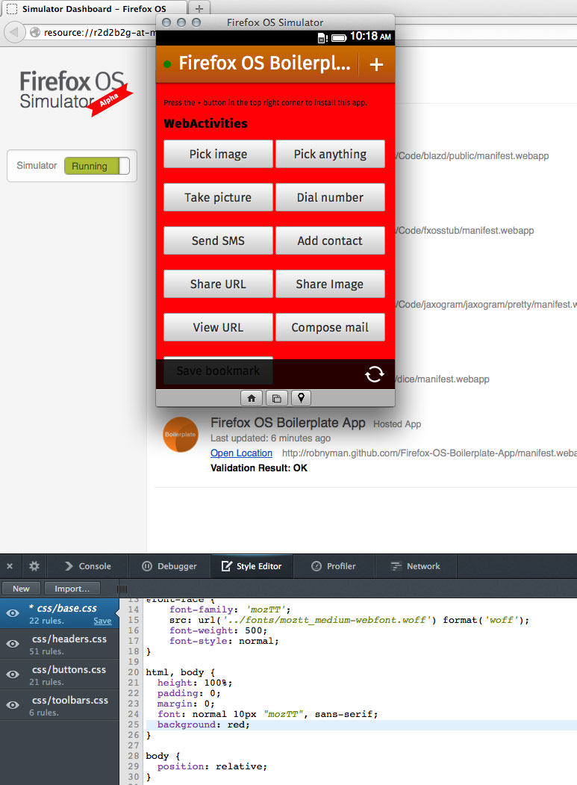

對於 Firefox OS 的開發者而言絕對是個好消息，因為我們正式發表了 Firefox OS 模擬器 (Firefox OS Simulator) 4.0。特別一提，針對想透過自己 App 在 Marketplace 上獲利的 Firefox OS 開發者，Firefox OS 模擬器 4.0 應該能為他們帶來實質助益。
4.0 版新功能
 改善過的 Dashboard 截圖
改善過的 Dashboard 截圖
新的「 Connect 」按鈕
現在針對各 App 提供了新的「Connect」按鈕，能讓特定 App 連上開發者工具箱。也就是說，現在你不需搜尋「Console (主控台)」中的訊息，或篩選「Debugger (除錯器)」中的指令碼，也能找到 App 的特定資訊。
測試付費 Apps 的 Receipt
現在各 App 的 Dashboard 都新增了下拉式選單，讓你能選擇「Receipt (收據)」的類型。而模擬器隨即會從 Marketplace 的收據服務下載測試收據，並重新安裝該收據所對應的 App。如此可讓你測試不同類型收據 (valid、invalid、refunded) 的收據驗證。
{kind=link}
新的「Connect」、「Refresh」按鈕，還有「Receipt」下拉式選單
遠端 CSS 樣式編輯
如果是用 Firefox Nightly 或 Aurora 版本連接 App，則可透過樣式編輯器 (Style Editor) 工具來編輯 App 的樣式表 (Style sheet)，並能立刻套用變更以查看編輯之後的效果。 
{kind=link}
編輯 Firefox OS Boilerplate App 之後，立刻就能看到漂亮紅色背景的效果
模擬觸控事件
現在模擬器支援觸控事件 (Touch event) 模擬功能。在模擬器中，Gaia 內建 Apps 現將真正模擬觸控事件而解決許多問題。另外亦可測試第三方 Apps 的觸控事件，而不再只能使用滑鼠事件 (Mouse event)。
隱藏功能： Shift-Ctrl/Cmd-R
按下快捷鍵 Ctrl-R (Mac 電腦則為 Cmd-R) 即可重新整理 App。你也可同時按住 Shift 鍵不放，則模擬器在重新整理 App 時，會一併清除永久性儲存資料，如AppCache、localStorage、sessionStorage、IndexedDB。
模擬器逐步解說
想知道更多細節嗎？可參閱 Simulator Walkthrough 進一步了解模擬器。另可到 Mozilla 開發者社群 (MDN) 參閱《Firefox OS 模擬器》一文。
下載並安裝模擬器
可至附加元件網站下載或更新模擬器。
發現錯誤？有任何意見？
你可在下方意見欄中留下自己的想法，或透過原文鏈結直接向作者提供自己的意見。如果你發現程式上的錯誤，則請到這裡填寫錯誤報告。
原文鏈結：https://hacks.mozilla.org/2013/07/firefox-os-simulator-4-0-released/